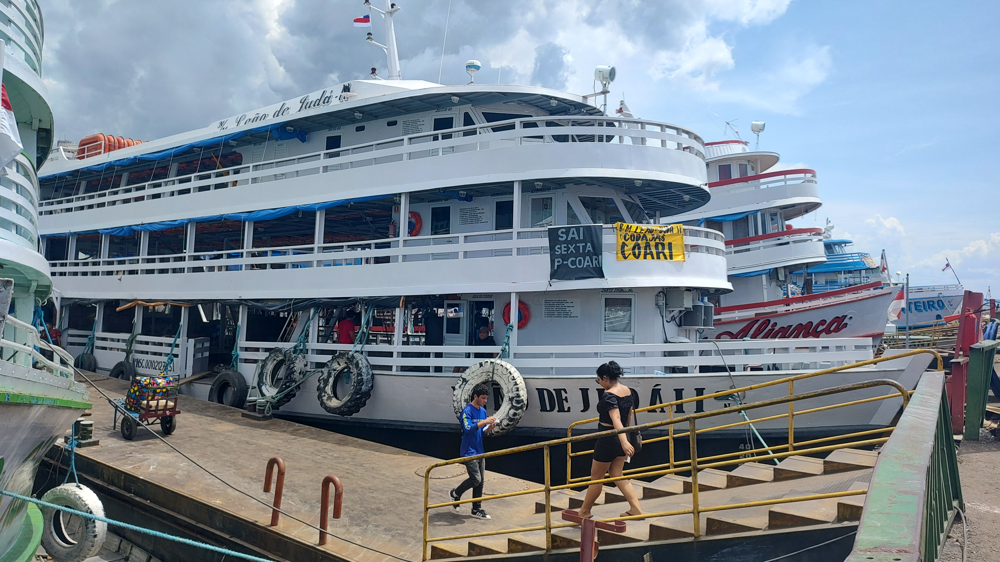

Severe droughts reduce river navigability and isolate communities in the Brazilian Amazon
Point of Departure
It is hard to imagine that the Amazon can reach such an extreme state of dryness that can even disrupt navigation through some of its largest rivers...
But that is what has been happening much more frequently than expected.
Photo by João Paulo Borges @drone_da_amazonia
Past Severe Droughts
The severe drought of 2023 was not an isolated event. Studies have shown that the basin is undergoing an intensification of extreme events, both droughts and floods. In our study, we found that the severe droughts of 2005, 2010, and 2015-2016, were not only abnormally intense, but also lasted longer than usual. We counted the number of days in which water levels were lower than a especific historic threshold for each one of the 90 river gauging stations under analysis.
Past Droughts
During the droughts of 2005, 2010, and 2015-2016, low water levels lasted more than one additional month compared to normal conditions.
Source: Santos de Lima et al. (2024) Comms. Earth & Env.
Consequences for the Population
The severe drought of 2023 was not an isolated event. Studies have shown that the basin is undergoing an intensification of extreme events, both droughts and floods. In our study, we found that the severe droughts of 2005, 2010, and 2015-2016, were not only abnormally intense, but also lasted longer than usual. We counted the number of days in which water levels were lower than a especific historic threshold for each one of the 90 river gauging stations under analysis.
Disruption of inland water transport routinely isolates local populations, limiting access to essential goods such as food, fuel and medicine, and basic services such as healthcare and education.

context here
Research Question
What are the experiences of communities during droughts in the Brazilian Amazon?
Methodology
Digital Media Analysis
The distribution of settlements at risk of prolonged isolation during extreme low-water periods were assessed, along with impacts reported in digital news outlets. For that, Google search engine was used to collect articles from digital media outlets. Using historic time series of river levels from 90 gauges, we examine long-term trends in affected communities.
Photo by João Paulo Borges @drone_da_amazonia
Results
Heavy Droughts and Limited Access
Disruption of inland water transport routinely isolates local populations, limiting access to essential goods such as food, fuel and medicine, and basic services such as healthcare and education.
The years 2005, 2010, and 2016 had the largest number of news accounts of drought impacts on communities.
Disruption of inland water transport routinely isolates local populations, limiting access to essential goods such as food, fuel and medicine, and basic services such as healthcare and education.
The years 2005, 2010, and 2016 had the largest number of news accounts of drought impacts on communities.
Disruption of inland water transport routinely isolates local populations, limiting access to essential goods such as food, fuel and medicine, and basic services such as healthcare and education.
Work Together
Developing Long-Term Strategies
Given this new reality, Amazon countries must develop long-term strategies for mitigation, adaptation and disaster response. Feel free to reach out to develop these strategies together!